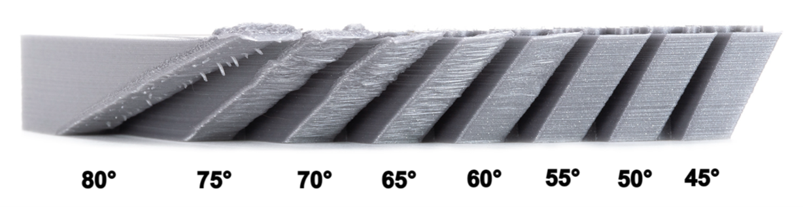
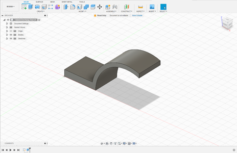
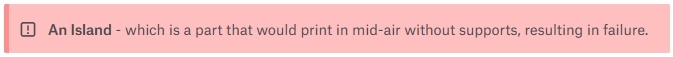
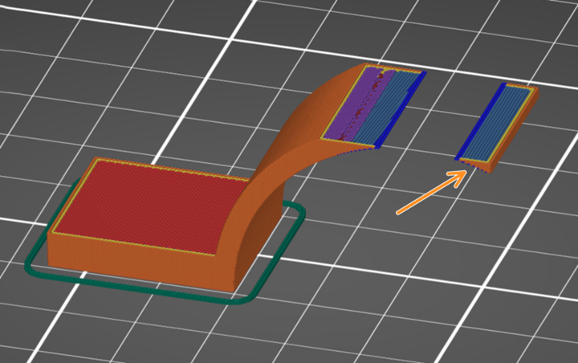
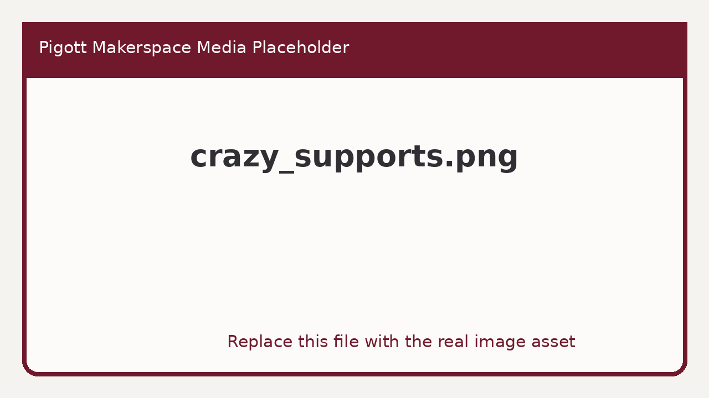
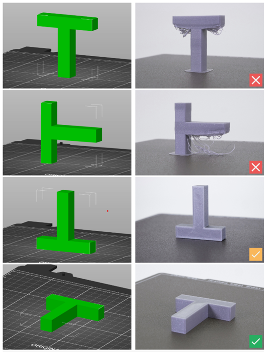
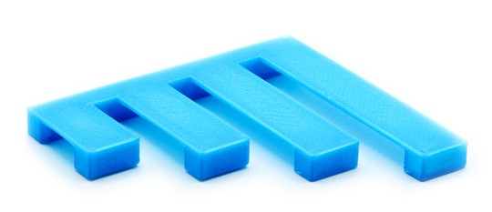

The part orientation plays a critical role in the final quality of the print. It affects everything from print time, accuracy, and surface finish to mechanical properties and material consumption. That's why it should be carefully taken into account from the very beginning of the design phase.
Steep overhangs and islands need supports to become printable. A model that requires a lot of supports will consume extra material, generating plastic waste and increasing the print cost. Also, the surfaces above supports will always have some imperfections.
Overhangs are one of the main reasons supports are used. Anything up to a 45-degree angle is generally considered safe and will not require any supports or other kind of printing assistance. With good cooling and filament settings, you will often get away even with 50 or 60 degrees overhangs. Designing parts so that they are printable with a minimum amount of support material is something you should always keep in mind.

As you can see, the steeper the overhang angle, the messier it becomes. While the initial layers might print fine, you will get more curl/sag with long steep overhangs. This can even result in a print failure. If the nozzle hits a curled-up edge, it can knock the print off the print bed.
3D printers, while extremely versatile and capable, obviously have a hard time when trying to print into thin air. Let’s take a look at a specific part as an example.

While it’s a very easy design relating to a quick print, this model has two features that could make printability difficult, undesirable, and potentially impossible. Looking at it from the side, you can see that it has not only a severe overhang but also:


An Island feature will always require some kind of structural support. When the nozzle attempts to print an island, it results in material being extruded in mid-air due to a lack of supports.
To counteract these obstacles, slicers give you the option to add supports to prints. This printed sparse scaffolding ensures there is filament where it would normally just fall off due to weight or lack of anchoring to the main model.

However, you will get a much better result if you design your part with this limitation in mind. This model could have been designed to be printed lying flat on its side. This way we avoid having to deal with any Islands or overhangs. We also won’t need any supports and therefore reduce printing time drastically and greatly improving the quality of the print. Always keep overhangs and islands in mind in the design phase.

While 3D printers cannot print completely mid-air, it is technically possible to cover short horizontal distances, with a maneuver called bridging.
As the name suggests, bridging connects two pieces of solid geometry by pulling the filament between them. The filament is being cooled the second it comes out of the nozzle and with the “pull” of the nozzle, it solidifies as it’s being dragged. Bridges only work if they are perfectly horizontal. The longer the bridge, the more sag happens due to the weight of the plastic. While small bridges print great without any assistance of supports, longer ones will end up sagging quite a bit.

When designing your parts, try to limit bridging areas as much as possible, but if needed, a good rule of thumb to follow is that any bridges less than 4cm do not need supports while greater than 4cm need supports in the middle.